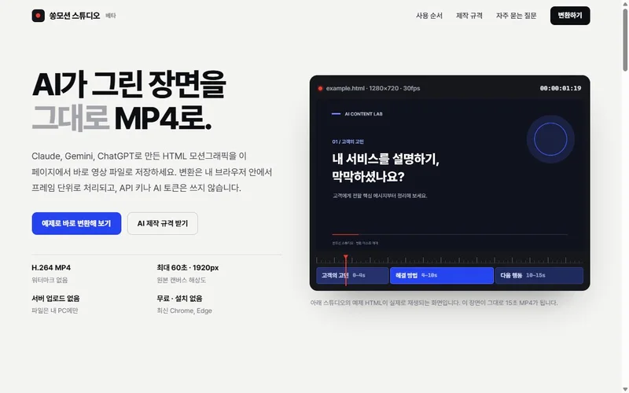
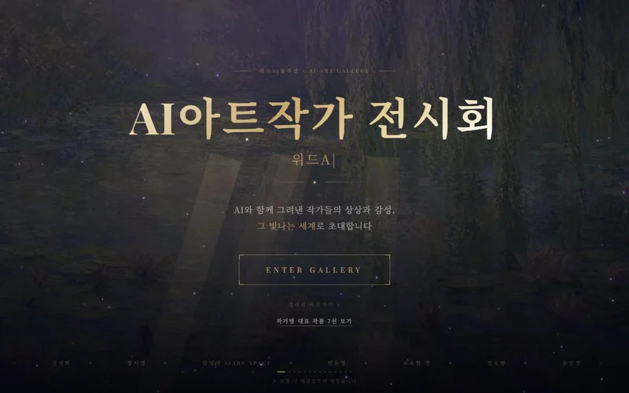

위드AI솔루션 / 포트폴리오
PORTFOLIO직접 만든 영상과 웹,
썸네일로 한눈에 보세요.
모션그래픽, 타이포그래피, 픽셀 애니메이션, 유튜브 「송이네는 오늘도」와 역사 인물 영상, K-메타버스, 상세페이지, 강사양성 과정의 AI아트 전시회까지. 썸네일을 누르면 바로 재생되거나 해당 사이트가 열립니다.
위드AI솔루션은 어떤 콘텐츠를 만들 수 있나요?
홍보·교육용 모션그래픽 영상, 키네틱 타이포그래피, 픽셀·캐릭터 애니메이션, AI 창작 애니메이션 시리즈, AI 역사 쇼츠, 3D로 걸어 다니는 K-메타버스 웹 공간, 상세페이지·랜딩페이지·웹앱을 만듭니다. 아래 작업은 모두 송민경 대표와 위드AI솔루션이 AI 도구로 기획·제작했습니다.
 K-메타버스온라인 은총 성당걸어서 둘러보는 3D 웹 성당, 휴대폰에서도 접속
K-메타버스온라인 은총 성당걸어서 둘러보는 3D 웹 성당, 휴대폰에서도 접속 K-메타버스세계음악분수음악에 맞춰 춤추는 분수를 걸으며 감상하는 3D 웹
K-메타버스세계음악분수음악에 맞춰 춤추는 분수를 걸으며 감상하는 3D 웹 상세·랜딩페이지캔바 강사 1급 과정 랜딩페이지과정 소개부터 신청까지 한 페이지로 설계
상세·랜딩페이지캔바 강사 1급 과정 랜딩페이지과정 소개부터 신청까지 한 페이지로 설계
웹앱쏭모션 스튜디오AI로 만든 HTML 모션그래픽을 MP4로 저장하는 도구
강사양성 결과물AI아트작가 온라인 전시회AI 올인원 강사양성 과정 수강생 작품을 모은 웹 갤러리‘예시’로 표시된 홍보영상은 강의 시연용 가상 매장 예시이며 실제 매장이나 실적이 아닙니다. 유튜브 영상은 채널 「CanvaAI연구소 송민경쌤」, 「그들의 선택」에 공개된 영상입니다.

CONTACT
강의, 컨설팅, 제작
강의, 컨설팅, 제작
무엇이든 문의하세요.
대상과 목적만 알려 주셔도 충분합니다. 내용을 확인한 뒤 맞춤 커리큘럼과 진행 방식, 견적을 담아 답변드립니다.
- 문의 남기기기관명, 대상·인원, 희망 일정, 원하는 주제
- 맞춤 제안목표에 맞춘 커리큘럼·제작 범위와 견적
- 진행과 후속 지원강의·컨설팅·제작 후 결과물과 활용 가이드 공유